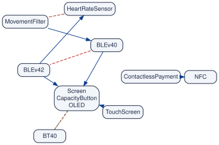
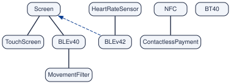
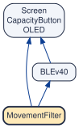

This vignette reads the results of vp_generate() into R
(one run, a history of runs, graphs made by other means, the minimal
form, a part of a model, the feature tree of a UVL file) and draws them.
It also introduces the examples that the other vignettes use.
The examples
The Mi Band 3
The main example of the vignettes is the feature model of a fitness
band, the Mi Band 3 (vp_example("miband3_realized.uvl")).
It has 24 features in all, 5 cross-tree constraints, and 24 valid
configurations. Of its features, 11 can vary: they are the dots of the
graphs. The figure recalls the model, and the figure its graphs.

The model is analysed with the at-least-one graph and the kernel, and
the files are kept in the folder out:
vp_generate(
vp_example("miband3_realized.uvl"),
output_dir = "out",
or_graph = TRUE,
kernel = TRUE,
read = FALSE
)read = FALSE returns the prefix of the files without
reading them: the next section reads them.

More examples
Some operations need more than one model, or a bigger one:
| Example | Used for |
|---|---|
| The Mi Band 3 as planned | Comparing two versions (Following a model through time). Same features, fewer constraints. |
| Seven generations of the Mi Band | Following a model through time. From the Mi Band 1 to the Mi Band 8. |
| The Mi Band 3 with a battery rule | The limits (Limits and theory): one more rule, over three features. |
| BusyBox, 37 months | A real history: the graphs of the published dataset of
Strong4VM Heradio et al. (2026) for
BusyBox, one commit per month from 2007-05 to 2010-05, from the study of
Pett et al. Pett et al. (2021); they come with
the package (vp_example("busybox")). Between 434 and 623
features. |
| Linux 3.13 (x86) | A large model: 7,100 configuration options that can vary, 88,018 dependencies and 57,667 conflicts. To show that the functions work at that scale (a run of about ten minutes, made once; its graphs are in the dataset of Strong4VM). |
Reading the results
One run
Function: vp_read()
The question. What did vp_generate()
find in a model?
A run of vp_generate() writes files that share a
beginning, the prefix of the run: here
out/miband3_realized. vp_generate() reads them
itself and returns the model; vp_read() reads them again
later, in another session, without solving anything. Give it the prefix,
and keep the result in a variable:
band <- vp_read("out/miband3_realized")
band
#> variplex model "miband3_realized"
#> features: 11 variable (the nodes of the graphs), 8 core, 0 dead
#> requires: 21 arrows excludes: 10 lines
#> at least one: 3 lines
#> atomic sets: 1 (of two or more features)The variable band is a model. Printed,
it gives a summary: the 11 features that can vary (the dots of the
graphs), the 8 core features (in every band) and the dead ones (in none:
none here), the size of the three graphs, and the atomic sets. A model
is an R list of tibbles, and you can look inside with
$:
band$requires
#> # A tibble: 21 x 2
#> from to
#> <chr> <chr>
#> 1 Screen OLED
#> 2 Screen CapacityButton
#> 3 TouchScreen Screen
#> 4 TouchScreen OLED
#> 5 TouchScreen CapacityButton
#> 6 OLED Screen
#> 7 OLED CapacityButton
#> 8 CapacityButton Screen
#> 9 CapacityButton OLED
#> 10 ContactlessPayment NFC
#> # i 11 more rowsEach row is an arrow: Screen requires OLED, that is, every band with a screen has an OLED panel. The tibbles of a model are:
| Part | What it holds |
|---|---|
band$features |
Every feature with its status:
variable (a real choice; a dot of the graphs),
core or dead. |
band$requires |
The requires graph: one row per arrow,
from requires to. |
band$excludes |
The excludes graph: one row per conflict; the order of
from and to means nothing. |
band$atleastone |
The at-least-one graph: every product has
from or to. NULL if the run had
no or_graph = TRUE. |
band$atomic |
The atomic sets: one row per feature, with the number
of its set. |
band$variables,
band$summary
|
The two reports of the run
(__variables.csv, __summary.json), when they
exist. |
The at-least-one graph is optional.
vp_generate() writes it only when it is asked to, with
or_graph = TRUE, because it costs a second question to the
solver per feature. When the run has no file
__atleastone.net, band$atleastone is
NULL, and the printed model says so. Here is the same band,
run without it:
band_plain <- vp_generate(vp_example("miband3_realized.uvl"))
band_plain
#> variplex model "miband3_realized"
#> features: 11 variable (the nodes of the graphs), 8 core, 0 dead
#> requires: 21 arrows excludes: 10 lines
#> at least one: not computed (use vp_generate(or_graph = TRUE))
#> atomic sets: 1 (of two or more features)
is.null(band_plain$atleastone)
#> [1] TRUE
try(vp_opposites(band_plain))
#> Error : The model "miband3_realized" has no at-least-one graph.
#> Run vp_generate() again with or_graph = TRUE.
vp_pair(band_plain, "Screen", "BT40") |> select(combination, possible)
#> # A tibble: 4 x 2
#> combination possible
#> <chr> <lgl>
#> 1 both FALSE
#> 2 only Screen TRUE
#> 3 only BT40 TRUE
#> 4 neither NAEvery function still works without the graph, but not all in the same way: some stop, some say what they do not know, and some answer with less without saying so. The table below lists every function that reads it. The graphs of the published dataset, made with version 1 of Strong4VM, never have it.
Which functions read the at-least-one graph. Without it, the functions below behave as the table says; every function not in the table reads only the requires and excludes graphs, and gives the same answer with or without it. The first group is safe (it stops), the second warns you; the third is the one to watch, because its answers look complete.
| Function | Without the at-least-one graph |
|---|---|
| ll Function | Without the at-least-one graph |
vp_atleastone_of(),
vp_opposites(), vp_primitive_atleastone(),
vp_requires_from_conflicts()
|
They are about the graph itself. |
vp_links(), vp_igraph(),
vp_similar_features()
|
When they are asked for "atleastone". |
vp_communities() |
When graphs includes
"atleastone". |
vp_pair() |
“neither” is possible: NA. |
vp_feature_table() |
atleastone and
decision_power_off: NA. |
vp_summary(),
vp_history_sizes()
|
atleastone: NA. |
vp_count_graph_products() |
and_atleastone: NA. |
vp_combinations_to_cover() |
For
,
exact is FALSE: the count is an upper
limit. |
vp_min_sample_size() |
A message: the bound may be lower than it could be. |
vp_consequences(),
vp_partial_configuration(),
vp_split_after()
|
A warning when they are asked to leave features out: what it forces is incomplete, and a mix that cannot go together may be called possible. |
vp_mig() |
A warning: the arrows from “f left out” to “g selected” are missing. |
vp_team_links() |
A warning: the links through leaving features out are missing. |
vp_splitting_decisions(),
vp_longest_decision_chain()
|
What leaving a feature out forces is missing: fewer features decided, shorter chains. |
vp_teams(), vp_team_moves(),
vp_team_order()
|
The interference between teams through leaving features
out is missing (must_agree_with of
vp_team_order()). |
vp_explain_requires() |
Only chains of arrows; the routes through a conflict and an at-least-one line are missing. |
vp_check() |
The two properties of the at-least-one graph are not checked. |
vp_twins() |
Features that differ only in their at-least-one partners count as twins. |
vp_largest_free_set() |
Two features of the set may never be left out together: the set may not be free. |
vp_independent_parts(),
vp_cut_features()
|
Parts joined only by an at-least-one line look separate. |
vp_coverage(),
vp_uncovered()
|
“Neither” combinations that may be impossible are counted as to cover and listed as missing. |
vp_sample_violations() |
A configuration that leaves out both features of a line is not reported. |
vp_representativeness() |
variplex counts the choices that the graphs it wrote let pass; without the lines they are more, and the share is lower. |
vp_dot(), vp_plot()
|
No dotted green lines. |
vp_compare(),
vp_interaction_changes()
|
The at-least-one lines are compared only when both versions have them. |
vp_degree_distribution(),
vp_changed_links(), vp_top_movers(),
vp_link_lifetime(), vp_version_distance(),
vp_eras(), vp_feature_churn(),
vp_co_change()
|
With "atleastone", a missing graph is read
as an empty one: every feature has degree 0, and if only some versions
have it, all their lines count as gained or lost. Use the same options
for every version (Reading the results). |
They stop with a message: the first four rows. They
warn, or say they do not know: the rows from vp_pair()
to vp_team_links(). They answer with less, without
saying so: the rest.
Two ways to get the same tibbles. Three small
functions give the same parts by name: vp_features(band) is
band$features, vp_links(band, "requires") is
band$requires (and likewise for "excludes" and
"atleastone"), and vp_igraph(band, "requires")
returns the same graph as an igraph object, for those who want to go
further with igraph. Both ways give exactly the same result:
identical(vp_links(band, "requires"), band$requires)
#> [1] TRUE
identical(vp_features(band), band$features)
#> [1] TRUE
vp_features(band) |> count(status)
#> # A tibble: 2 x 2
#> status n
#> <chr> <int>
#> 1 core 8
#> 2 variable 11The vignettes use both. band$requires is shorter to
type; vp_links() reads better at the start of a pipe, and
when a graph is missing it stops with a message that says how to get it,
where band$atleastone would just return NULL
(see the box above).
Limits: what this cannot tell you
vp_read() shows what is in the files, and the files hold
relationships between two features. The core and dead lists are
complete; the graphs hold every relationship between two features and no
rule over three or more (The one
limit that every operation shares). For a UVL model, the numbers,
texts and cardinalities of the model are not in the files either (Limits and theory).
Many runs: a history
Function: vp_read_history()
The question. How do I load all the versions of a model at once?
A history is a list of runs of vp_generate(), one per
version of the model, oldest first. There are two ways to get one:
vp_history() runs every version and gathers the models at
once, and vp_read_history() reads runs made earlier,
without solving anything again.
Step 1: run every version. The examples of the
package include the realized models of seven generations of the Mi Band,
from the Mi Band 1 to the Mi Band 8. The loop below runs each one and
keeps all the results in one folder, evolution:
gens <- c(
"miband1",
"miband1s",
"miband2",
"miband3",
"miband4",
"miband6",
"miband8"
)
for (g in gens) {
vp_generate(
vp_example(paste0(g, "_realized.uvl")),
output_dir = "evolution",
or_graph = TRUE,
read = FALSE
)
}
list.files("evolution", "__requires.net$")
#> [1] "miband1_realized__requires.net" "miband1s_realized__requires.net"
#> [3] "miband2_realized__requires.net" "miband3_realized__requires.net"
#> [5] "miband4_realized__requires.net" "miband6_realized__requires.net"
#> [7] "miband8_realized__requires.net"Each version gets its own prefix, the name of its model:
evolution/miband1_realized,
evolution/miband1s_realized, and so on.
or_graph = TRUE adds the at-least-one graph, so that it can
be compared too. Use the same options for every
version: a version analysed with other options would differ for
that reason alone.
Step 2: read the runs.
vp_read_history() takes the prefixes of the runs, oldest
first, and names for the versions, and returns a tibble with one row per
version and the model in a list column:
history <- vp_read_history(
paste0("evolution/", gens, "_realized"),
versions = gens
)
history
#> # A tibble: 7 x 2
#> version model
#> <fct> <list>
#> 1 miband1 <vp_model>
#> 2 miband1s <vp_model>
#> 3 miband2 <vp_model>
#> 4 miband3 <vp_model>
#> 5 miband4 <vp_model>
#> 6 miband6 <vp_model>
#> 7 miband8 <vp_model>The column model holds the seven models;
history$model[[4]] is the Mi Band 3. The functions of Following a model through time
take the whole tibble. When the files are not needed, one call does both
steps:
history <- vp_history(
vp_example(paste0(gens, "_realized.uvl")),
versions = gens,
or_graph = TRUE
)Limits: what this cannot tell you
Each model is read as it is, with the limits of
vp_read(). Versions analysed with different options, or
with different versions of the engine, differ for that reason alone; and
features are matched across versions by their names (Features that were probably
renamed).
Graphs made by version 1 of Strong4VM
Function: vp_read(), with
artificial = "drop"
The question. How do I read graphs made by version 1 of Strong4VM, such as those of its published dataset?
variplex has the engine of Strong4VM 2.0, but graphs made by the
earlier version 1 of Strong4VM are still around: the
dataset published with Strong4VM Heradio et
al. (2026) was made with it. Version 1 wrote the same Pajek files,
but they differ in two ways: its graphs also contain the core and dead
features, and, for formulas translated from Kconfig, the helper
variables of the translation (named like k!123 or
__VISIBILITY__X). vp_read() always removes the
core and dead features from the graphs, as Strong4VM 2.0 does; with
artificial = "drop" it also removes the nodes whose names
look like helper variables. The BusyBox history of the vignettes was
made by version 1 of Strong4VM and has no helper variables. (For graphs
of formulas made by KConfigReader, add
translator = "kconfigreader": it also drops
CHOICE_,
one per choice group, and
_MODULE,
“
is built as a module”, when
exists.)
files <- list.files(vp_example("busybox"), "__requires.net$", full.names = TRUE)
prefixes <- sub("__requires.net$", "", files)
busybox <- vp_read_history(prefixes, versions = sub(".*busybox_", "", prefixes))
busybox$model[[1]]
#> variplex model "2007-05"
#> features: 434 variable (the nodes of the graphs), 5 core, 0 dead
#> requires: 462 arrows excludes: 25 lines
#> at least one: not computed (use vp_generate(or_graph = TRUE))
#> atomic sets: 4 (of two or more features)
#> (made by version 1 of Strong4VM: core and dead features were removed from the graphs)Limits: what this cannot tell you
The rule artificial = "drop" goes by the names: it keeps
a node whose name has only letters, digits and underscores and does not
start with __VISIBILITY__. A helper variable with an
ordinary name passes, and a real option with an unusual name is dropped.
Strong4VM 2.0 decides by rules that know each translator, and writes
every decision in __variables.csv; when you can, run
Strong4VM 2.0 again on the formulas rather than filter old graphs.
Removing nodes is always safe for the links that remain: whether two
features are related does not depend on the other nodes.
The minimal form
Function: vp_minimal()
The question. What would the measures say about what was written, rather than about everything that follows from it?
vp_minimal() turns a model into its minimal form (Two forms of the same graphs);
vp_read(prefix, form = "minimal") reads the minimal form
that vp_generate() wrote beside the complete graphs;
vp_expand() rebuilds the complete graphs from the minimal
form:
band_min <- vp_minimal(band)
band_min
#> variplex model "miband3_realized"
#> features: 9 variable (the nodes of the graphs), 8 core, 0 dead
#> requires: 6 arrows excludes: 3 lines
#> at least one: 1 lines
#> minimal form: skeleton, primitive conflicts and primitive at-least-one lines;
#> each atomic set is one node (1 sets)
vp_links(band_min, "requires")
#> # A tibble: 6 x 2
#> from to
#> <chr> <chr>
#> 1 TouchScreen Screen
#> 2 ContactlessPayment NFC
#> 3 MovementFilter BLEv40
#> 4 BLEv40 Screen
#> 5 BLEv42 Screen
#> 6 BLEv42 HeartRateSensorvp_links(band_min, "requires") is an alternative
notation for band_min$requires (Reading
the results): a minimal model has the same parts as a complete one.
Nine nodes (the atomic set of the screen is one), six arrows, three
conflicts and one at-least-one line. Measures now describe that
structure:
vp_feature_table(band_min) |>
select(feature, required_by, requires, excludes, decision_power)
#> # A tibble: 9 x 5
#> feature required_by requires excludes decision_power
#> <chr> <int> <int> <int> <dbl>
#> 1 Screen 3 0 1 0.3
#> 2 TouchScreen 0 1 0 0.4
#> 3 ContactlessPayment 0 1 0 0.1
#> 4 MovementFilter 0 1 1 0.7
#> 5 HeartRateSensor 1 0 1 0.1
#> 6 BLEv40 1 1 1 0.5
#> 7 BLEv42 0 2 1 0.7
#> 8 BT40 0 0 1 0.7
#> 9 NFC 1 0 0 0
vp_summary(complete = band, minimal = band_min) |>
select(
model,
requires,
excludes,
density_requires,
gini_required_by,
implicit_requires
)
#> # A tibble: 2 x 6
#> model requires excludes density_requires gini_required_by implicit_requires
#> <chr> <int> <int> <dbl> <dbl> <dbl>
#> 1 complete 21 10 0.191 0.649 0.143
#> 2 minimal 6 3 0.0833 0.667 0.143On the minimal form required_by counts direct
dependants: three features hang directly from the screen, against six in
the complete graph. decision_power, an inference, is the
same in both forms. In the summary, the counts, densities and
concentrations follow the form; implicit_requires, an
inference, does not.
identical(vp_kernel(band_min), vp_kernel(band))
#> [1] TRUE
nrow(vp_expand(band_min)$requires)
#> [1] 21Same question, same answer, whatever the form, when the question is about products. Different numbers, on purpose, when the question is about the shape of the graphs: then the minimal form measures what people wrote, and the complete form what everyone has to live with.
The minimal form and the variability model
The minimal form looks like a model: a few arrows and lines, close to what someone would write. How does it relate to the variability model it comes from, and why not study that model directly? The constraints of the Mi Band 3, as written:
uvl <- readLines(vp_example("miband3_realized.uvl"))
writeLines(uvl[(grep("^constraints", uvl) + 1):length(uvl)])
#> MovementFilter => !HeartRateSensor & BLEv40
#> BLE => HeartRateSensor | MovementFilter
#> ContactlessPayment => NFC
#> !Screen => BT40
#> BT40 => !ScreenLink by link. The 10 links of the minimal form of the band, and where each comes from:
| Link of the minimal form | In the variability model |
|---|---|
| TouchScreen → screen | Written: the touch screen is a child of the screen in the tree. |
| ContactlessPayment → NFC | Written:
ContactlessPayment => NFC. |
| MovementFilter → BLEv40 | Written: half of
MovementFilter => !HeartRateSensor & BLEv40. |
| MovementFilter excludes HeartRateSensor | Written: the other half of the same constraint. |
| screen excludes BT40 | Written: BT40 => !Screen. |
| screen or BT40 (at least one) | Written: !Screen => BT40. |
| BLEv40 excludes BLEv42 | Written: the two versions are alternatives of the group BLE. |
| BLEv40 → screen | Written nowhere. BLEv40 is a kind of BLE, a band has BLE or BT40, and a band with BT40 has no screen: so a band with BLE 4.0 has a screen. |
| BLEv42 → screen | Written nowhere, for the same reason. |
| BLEv42 → HeartRateSensor |
Written nowhere. It follows from
BLE => HeartRateSensor | MovementFilter, a rule over
three features, and from the movement filter needing version 4.0. |
And the other way round, parts of the model are in no link: the
mandatory features (core, so not in the graphs), the fact that
OLED and CapacityButton come with every screen (merged
into one node, the atomic set), the “at least one version” half of the
group BLE, and the rule
BLE => HeartRateSensor | MovementFilter itself, which
survives only through its consequence for a pair.
So the minimal form is neither a copy of the model nor a subset of
it. It is what the model implies about pairs of features, written as
briefly as possible: every link holds in every valid configuration,
none follows from the others, and nothing implied about a pair is
missing (the complete graphs come back with
vp_expand()).
Why not study the variability model directly?
The model says what was written; the minimal form says what holds. Three of the ten links of the band are written nowhere. In Linux most relationships are of that kind (The whole model in numbers: 78 % of the dependencies follow from others). A measure computed on the text of the model misses them.
The same model can be written in many ways. Two texts with the same valid configurations, one with redundant constraints, one in another style or another language, have the same graphs. Measures on the minimal form depend on the meaning, not on the wording, so they can be compared across models, languages and translators.
One format for every language. UVL, Kconfig through KMax or KConfigReader, any DIMACS formula: their models do not look alike, and a translated formula is full of helper variables. The graphs are always the same kind of object, with one node per feature, so the same functions work on all of them.
Questions without a solver. Reading the model to answer “can these go together?” means reasoning with it, that is, a solver. The graphs answer from links that were computed once.
Why the minimal form, and not only the complete graphs? The complete graphs and the minimal form hold the same information. The minimal form is far smaller (for Linux 3.13, 11,981 links against 145,685), so it can be drawn and read; it is unique, so two models with the same meaning have the same minimal form; and it is the closest the graphs come to what was written, so it is the form on which to measure the written structure (Two forms of the same graphs): direct dependants, gateways, communities, cut features, and how the written structure grows from version to version. The complete graphs remain the form for questions about products.
Why it matters. Many questions about a product line are about how it was built: which features were written to depend on which, how its written structure grows, where its authors drew its modules. The complete graphs mix those decisions with all their consequences; the minimal form separates them, so that measures of the structure count decisions, not echoes.
Limits: what this cannot tell you
Close to what was written does not mean equal to it: the minimal form has links that nobody wrote, lacks constraints that others imply, and has no trace of the rules over three or more features. The approximation is the same for every model, so it is fair for comparisons; but to find which written constraint to change, you need the model itself.
Part of a model
Function: vp_subset()
The question. How do I study one subsystem alone, for instance the options of one directory of Linux?
Whether two features are related does not depend on the other
features of the model. So the graphs of a part of a model are the graphs
of the whole model restricted to that part, exactly, and no solver has
to run again (property P3, Three
properties of the graphs). vp_subset() keeps the
features you give, with the links among them; every function of the
vignettes then works on the part:
part <- c("Screen", "OLED", "CapacityButton", "BLEv40", "BLEv42", "BT40")
ble_part <- vp_subset(band, part, name = "screen and bluetooth")
ble_part
#> variplex model "screen and bluetooth"
#> features: 6 variable (the nodes of the graphs), 8 core, 0 dead
#> requires: 12 arrows excludes: 6 lines
#> at least one: 3 lines
#> atomic sets: 1 (of two or more features)
vp_primitive_conflicts(ble_part)
#> # A tibble: 2 x 3
#> from to reach
#> <chr> <chr> <int>
#> 1 Screen BT40 3
#> 2 BLEv40 BLEv42 1Why it matters. Real product lines are too large to study whole: a team owns one subsystem, a reviewer looks at one menu, a test campaign targets one area. Because a part of the graphs is exact, every analysis of the vignettes can be run on that subsystem alone, with the same guarantees as on the whole model and without running a solver again.
Limits: what this cannot tell you
Exact for the complete graphs, which is why vp_subset()
expands a minimal form first: cutting a skeleton would cut its chains. A
measure of the part counts only inside the part:
required_by counts only the dependants that were kept.
The feature tree of a UVL model
Function: vp_read_uvl_tree()
The question. The graphs have no tree. How do I compare them with the tree of a UVL model?
vp_read_uvl_tree() reads the feature tree of a UVL file:
each feature with its parent, how it hangs from it, and whether it is
abstract. Operations that
need the feature tree uses it.
tree3 <- vp_read_uvl_tree(vp_example("miband3_realized.uvl"))
tree3 |> filter(!abstract) |> head(6)
#> # A tibble: 6 x 4
#> feature parent relation abstract
#> <chr> <chr> <chr> <lgl>
#> 1 Screen SmartWatch optional FALSE
#> 2 TouchScreen Screen optional FALSE
#> 3 OLED Screen mandatory FALSE
#> 4 CapacityButton OLED mandatory FALSE
#> 5 FitnessMonitor Functionalities mandatory FALSE
#> 6 SleepTracker Functionalities mandatory FALSELimits: what this cannot tell you
It reads the features section of the file: names,
parents, group kinds and the attribute abstract.
Attributes, cardinalities of features and imports of other files are not
interpreted.
Drawing the graphs
A drawing in one line
Function: vp_plot()
The question. What do the graphs look like?
vp_plot() draws a model, or a part of it. The style is
the one of all the figures of the vignettes: a requirement is a blue
arrow, a conflict a dashed red line, an at-least-one line a dotted green
one, and an atomic set one box with the names of its features one under
the other.
The drawing is made by the package DiagrammeR, which carries its own
copy of Graphviz, so nothing has to be installed outside R. Without a
file, vp_plot() returns an htmlwidget: RStudio shows it in
its viewer, and R Markdown puts it in the document. With a file, it
saves the drawing: as SVG with the package DiagrammeRsvg, and as PDF or
PNG with rsvg as well (the extension of the file name decides).
vp_plot(vp_minimal(band)) # shown in the viewer
vp_plot(vp_minimal(band), "figures/reading-and-drawing-band_minimal.svg")
vp_plot(
vp_minimal(band),
"figures/reading-and-drawing-band_neato.svg",
layout = "neato"
)
vp_plot(vp_feature_tree(band), "figures/reading-and-drawing-band_tree.svg")
vp_plot(
band,
"figures/reading-and-drawing-band_upset.svg",
graphs = "requires",
features = vp_upset(band, "MovementFilter")$feature,
highlight = "MovementFilter"
)Nothing is printed: each call writes a file, and returns its path without showing it. These are the four files:

"dot": blue arrows are requirements, dashed red lines
conflicts, the dotted green line the at-least-one line. The box of the
screen holds its atomic set.
"neato".

If Graphviz itself is installed, engine = "graphviz"
makes the drawing with its programs instead, always into a file.
vp_plot() looks for them on the PATH and in the folders
where the installers of Graphviz put them; if Graphviz is somewhere
else, tell R where its bin folder is, once per session (or
in your .Rprofile):
options(variplex.graphviz = "D:/tools/Graphviz/bin")
vp_plot(vp_minimal(band), "band.pdf", engine = "graphviz")What it can draw. The first argument is any of three things:
A model, complete or minimal: the drawing shows the links it has. The minimal form,
vp_minimal(band), draws what was written, roughly: the clearest picture. The complete model, asvp_read()returns it, draws every dependency, transitive ones included (addmerge_atomic = FALSEto see the arrows inside atomic sets too). It turns into a tangle as soon as a model has more than a handful of features, so it is best kept to a part.A tibble of links, with the columns
fromandto: the answer ofvp_skeleton(),vp_primitive_conflicts(),vp_kernel_links(),vp_changed_links()and the like. Every link is a requirement, unless a columngraph(orlink, as invp_kernel_links()) says"excludes"or"atleastone", so several answers can be drawn together afterbind_rows().A feature tree: the one the graphs suggest, from
vp_feature_tree(), or the one of a UVL file, fromvp_read_uvl_tree()(abstract features get a dashed border). Parents are at the top; cross-tree requirements are dashed arrows.
The arguments.
| Argument | What it does |
|---|---|
file |
where to save: .svg, .pdf or
.png; without it, an htmlwidget |
layout |
how the features are placed (next table) |
graphs |
which graphs of a model to draw, for example
"requires" or c("requires", "excludes")
|
features |
draw only these features and the links among them |
highlight |
features to fill in yellow |
highlight_links |
a tibble with from and to:
links to draw thick |
fill |
a named vector, feature colour: for example one colour per community |
merge_atomic |
TRUE (the default): one box per atomic
set; FALSE: one box per feature |
rankdir |
for the layout "dot": "BT"
(required features at the top; the default for graphs),
"TB" (the default for trees), "LR",
"RL"
|
max_nodes |
refuse to draw more boxes than this (400 by default) |
The layouts. Graphviz has several programs, each
placing the features its own way (the copy of Graphviz in DiagrammeR has
no "sfdp", and draws it as "fdp"):
| Layout | How it places the features | Best for |
|---|---|---|
"dot" |
in layers, every arrow pointing the same way | requirements, the skeleton, trees (the default) |
"neato" |
springs: linked features pull together | conflicts, and models with few requirements |
"fdp" |
springs, a faster method | the same, a little larger |
"sfdp" |
springs, for large graphs | a few hundred features |
"circo" |
on a circle | groups of alternatives (a clique of conflicts) |
"twopi" |
on rings around one feature | what surrounds one feature |
Every graph of the vignettes, in one line
Function: vp_plot()
The question. How do I draw one particular graph of the vignettes?
Each line below draws one of the graphs the vignettes talk about, and writes an SVG file. Most of these graphs are explained later, in the section given in the comments; come back here when you want to see one. Draw the band first, then point the same lines at your own model.
The complete graphs, as vp_read()
returns them: every relationship, transitive ones included.
# every dependency, every conflict, every at-least-one line
vp_plot(
band,
"figures/reading-and-drawing-requires_all.svg",
graphs = "requires"
)
vp_plot(
band,
"figures/reading-and-drawing-excludes_all.svg",
graphs = "excludes",
layout = "neato"
)
vp_plot(
band,
"figures/reading-and-drawing-atleastone_all.svg",
graphs = "atleastone",
layout = "circo"
)
# the three together
vp_plot(band, "figures/reading-and-drawing-three_all.svg")The minimal graphs: roughly what was written (The minimal form).
# the three together (band_min was made with vp_minimal() when reading the
# results)
vp_plot(band_min, "figures/reading-and-drawing-three_minimal.svg")
# the skeleton, the primitive conflicts, the primitive at-least-one lines
vp_plot(
band_min,
"figures/reading-and-drawing-skeleton.svg",
graphs = "requires"
)
vp_plot(
band_min,
"figures/reading-and-drawing-primitive_conflicts.svg",
graphs = "excludes",
layout = "neato"
)
vp_plot(
band_min,
"figures/reading-and-drawing-atleastone_primitive.svg",
graphs = "atleastone"
)Answers of other functions: anything with the
columns from and to.
# the kernel
vp_plot(vp_kernel_links(band), "figures/reading-and-drawing-kernel.svg")
# the modal implication graph (MIG), compact: nodes "A" and "not A"
vp_plot(vp_mig(band_min), "figures/reading-and-drawing-mig.svg", rankdir = "LR")
# the arrows that follow from others
vp_plot(vp_implied_requires(band), "figures/reading-and-drawing-implied.svg")Trees, parts, colours and changes.
# the tree the graphs suggest, and the tree of the UVL file
vp_plot(vp_feature_tree(band), "figures/reading-and-drawing-tree_rebuilt.svg")
tree_uvl <- vp_read_uvl_tree(vp_example("miband3_realized.uvl"))
vp_plot(tree_uvl, "figures/reading-and-drawing-tree_declared.svg")
# two of its branches, so that the drawing fits the page
vp_plot(
tree_uvl,
"figures/reading-and-drawing-tree_declared_part.svg",
features = c(
"SmartWatch",
"Screen",
"TouchScreen",
"OLED",
"CapacityButton",
"Connectivity",
"Bluetooth",
"BLE",
"BLEv40",
"BLEv42",
"BT40",
"NFC"
)
)
# a part of the model
vp_plot(
vp_subset(band, c("Screen", "TouchScreen", "BLEv40", "BT40")),
"figures/reading-and-drawing-part.svg"
)
# one colour per community
groups <- vp_communities(band)
colours <- c("#FFE9B8", "#D6E9C6", "#D9E3F0", "#F2D7D5")[groups$community]
vp_plot(
band_min,
"figures/reading-and-drawing-communities.svg",
fill = setNames(colours, groups$feature)
)
# what changed between two versions
vp_plot_compare(
vp_read("planned/miband3_planned"),
band,
"figures/reading-and-drawing-changes.svg"
)Four of these files: Some graphs, such as the complete modal
implication graph (68 arrows on the band), are readable only in their
compact form (The modal
implication graph (MIG)) or in parts: draw them with
features =. The complete requires graph has many more
arrows than the skeleton of the figure: every transitive dependency is
there, and the arrows inside the atomic set of the screen are hidden in
its box (merge_atomic = FALSE shows them).
To change the drawing by hand (colours, sizes, a title),
vp_dot() takes the same arguments and returns the Graphviz
source, a text to edit and render yourself: with
DiagrammeR::grViz(), or with the program dot
of Graphviz after
writeLines(vp_dot(vp_minimal(band)), "band.dot").
Limits: what this cannot tell you
A drawing shows the links, not their meaning: positions are chosen by
the layout to make the picture tidy. With "neato" or
"fdp", two features drawn close are not necessarily
related, and in the layers of "dot" the height of a box is
Graphviz’s choice, close to, but not always equal to, the level of Levels, depth and the longest
chain. A drawing also stops being readable long before the layout
stops coping: beyond some fifty boxes, draw a part
(features =, or vp_subset()) rather than the
whole model.
References
R. Heradio, L. Cambelo,
M. A. Olivero, J. M. Sanchez, D. Fernandez-Amoros. A dataset of strong
dependency and conflict graphs generated from Boolean formulas encoding
the variability of highly configurable software systems. Data Descriptor
manuscript (papers/scientific_data_graphs); dataset:
Zenodo, https://doi.org/10.5281/zenodo.18260602.
T. Pett, S. Krieter, T. Runge, T. Thüm, M. Lochau, I. Schaefer. Stability of product-line sampling in continuous integration. In VaMoS, 2021. doi:10.1145/3442391.3442410.